Roadbar Evo TLO
쉬몰케의 기준이 되는 카본 드롭 핸들바. 1K 또는 UD 결, 세 가지 로고 에디션, 내장 케이블과 타임트라이얼 클립온 보강을 옵션으로 고릅니다.
- Weight
- 130 ~ 150g
- Width
- 400 / 420 / 440mm
- Reach
- 73 / 78mm
- Drop
- 125 / 126mm

Konstanz · Since 1992
The Lightest One
1g을 덜기 위해 한 겹을 더 고민합니다. 독일 콘스탄츠에서 손으로 감아 만드는 카본 컴포넌트.
01
Brand
Schmolke CarbonKonstanz · Since 1992
쉬몰케 카본은 1992년 독일 남부 보덴호 호숫가의 도시 콘스탄츠에서 기계공학 엔지니어 슈테판 쉬몰케(Stefan Schmolke)가 세운 카본 컴포넌트 회사입니다. 형 마티아스와 함께 어려서부터 레이스를 탔던 그는 대학 졸업을 앞둔 1989년 형과 하이엔드 부품 매장을 열었고, 같은 해 졸업 논문으로 카본 레이싱 핸들바의 이론을 썼습니다.
이듬해 실제로 탈 수 있는 카본 핸들바를 만들었고, 주문이 생산 능력을 넘어서자 1992년 회사를 세웠습니다. 2001년 얀 울리히(Jan Ullrich)는 쉬몰케 핸들바로 투르 드 프랑스 종합 2위에 올랐습니다. 30년이 넘은 지금도 쉬몰케는 양보다 질을, 조립 라인보다 손을 택하는 방식을 지킵니다.

TLO · The Lightest One
TLO는 The Lightest One, 가장 가벼운 것이라는 뜻으로 쉬몰케의 최상위 라인입니다. 쉬몰케는 부품에 걸리는 힘을 컴퓨터로 먼저 분석한 뒤, 하중이 몰리는 곳에는 최대 23겹, 힘이 적게 걸리는 곳에는 7겹까지 프리프레그를 다르게 쌓습니다. 벽 두께가 일정한 일반 부품과 달리 필요한 곳에만 소재를 두기 때문에 가벼우면서도 단단합니다.
표면에는 도장을 하지 않습니다. 무광 에폭시 마감은 페인트보다 흠집에 강하고, 불필요한 무게를 더하지 않습니다. 직물처럼 짜인 1K와 섬유가 한 방향으로 흐르는 UD, 두 가지 결 가운데 고르고, 레드·화이트 로고의 쉬몰케 에디션과 블랙, 화이트 에디션으로 마감합니다.
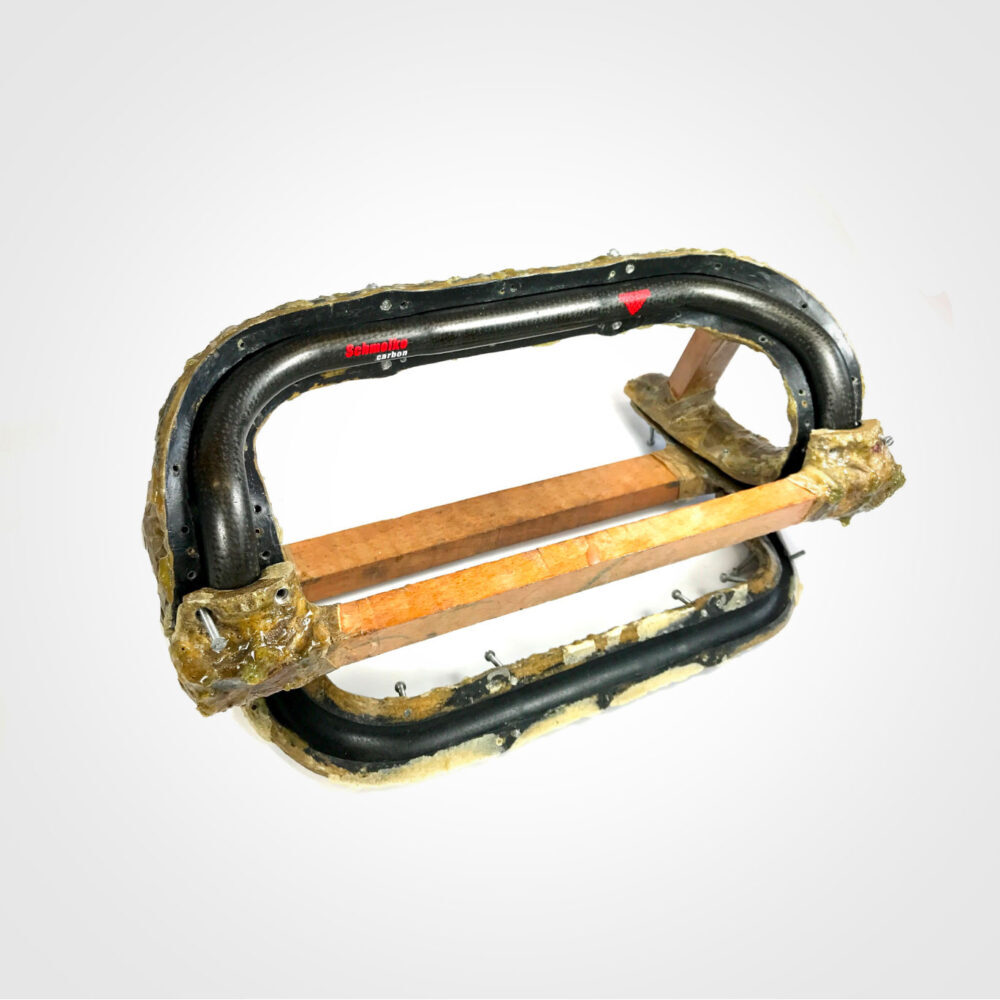
졸업 논문에서 시작된 첫 카본 로드 핸들바. 쉬몰케의 모든 제품은 이 한 개의 핸들바에서 출발했습니다.
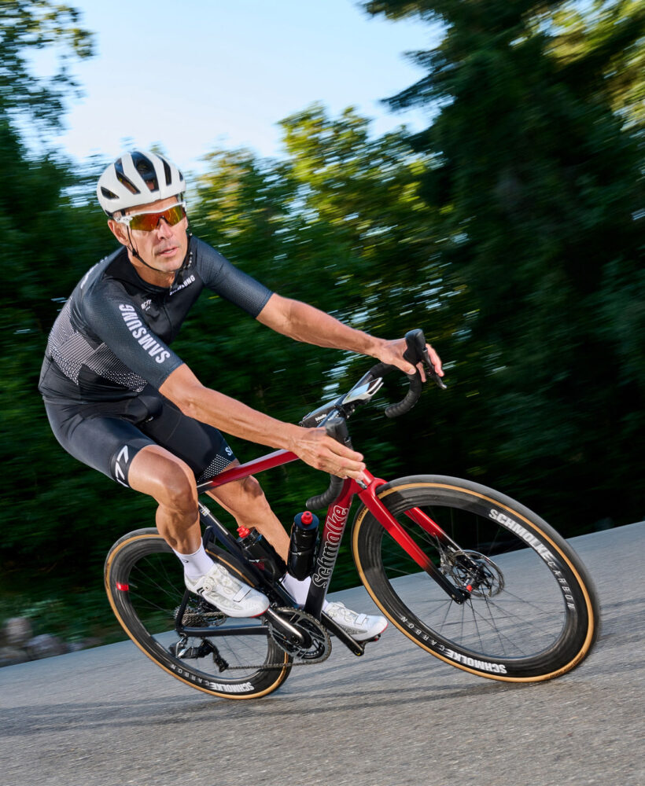
프리프레그를 손으로 한 겹씩 감아 만듭니다. 힘이 지나가는 경로를 따라 겹의 수와 방향을 바꿉니다.

페인트 대신 무광 에폭시. 카본의 결이 그대로 보이고, 도장의 무게와 흠집 걱정을 덜었습니다.

로드와 그래블, MTB, 폴딩 바이크까지. 같은 기준으로 핸들바와 시트포스트, 안장, 휠을 만듭니다.
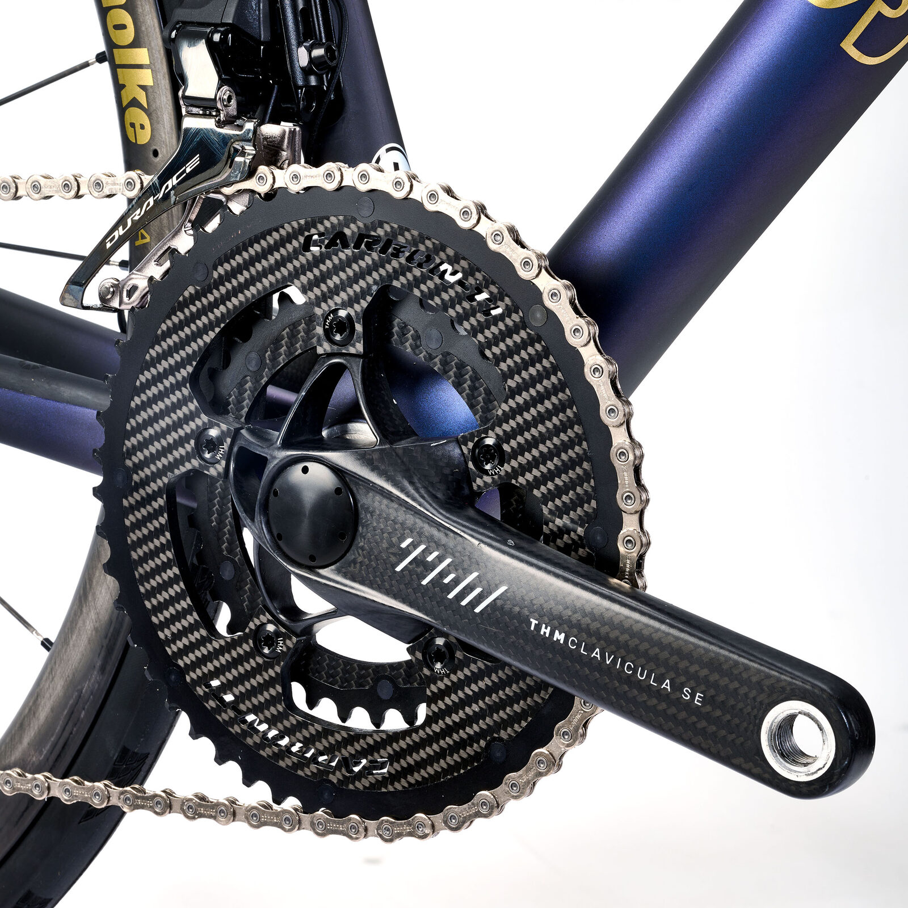

Founder · Stefan Schmolke
“불가능한 것은 없다.”
슈테판 쉬몰케는 학생 시절 자전거 기술 분야의 권위자 한스크리스티안 스몰릭(Hans-Christian Smolik)의 지도로 카본 핸들바를 연구했고, 졸업 뒤에는 설계 사무소와 항공우주 기업 EADS에서 일했습니다. 지금도 쉬몰케의 카본 부품 대부분을 직접 개발하거나 개발을 이끕니다.
2020년부터는 같은 독일의 카본 컴포넌트 회사 THM과 함께합니다. 쉬몰케의 레게리시마(Leggerissima) TLO는 THM 클라비큘라 크랭크에 쉬몰케 콕핏과 시트포스트, 안장, 휠을 더해 완성차 5.4kg을 만들었습니다.
Stefan Schmolke, FounderSchmolke Carbon
The Range
핸들바부터 물병 케이지까지, 같은 원칙으로 만든 쉬몰케의 주력 부품.
최대 17겹 프리프레그를 손으로 감은 에르고 드롭 핸들바. 내장 케이블 옵션.
핸들바와 스템을 하나로 합쳐 케이블을 완전히 숨긴 일체형 콕핏.
6° 플레어로 지나치게 낮지 않은 에어로 자세를 만드는 일체형 콕핏.
섬유가 알루미늄 인서트를 완전히 감싸 도는 루프 구조의 카본 스템.
최대 23겹 적층으로 앞뒤로는 부드럽게 휘고 좌우로는 단단한 시트포스트.
쉘과 프레임, 레일까지 한 조각의 카본으로 만든 안장.
로드와 그래블, 크로스컨트리까지 쓰는 폭 130mm 3K 카본 안장.
카본 스포크 24개로 엮은 37mm 튜브리스 디스크 휠셋.
1kg을 넘지 않는 50mm 에어로 디스크 휠셋.
하나 2.2g의 텍스타일 스포크로 엮은 그래블 휠셋.
브롬톤 T 라인을 위한 15mm 라이즈 카본 로우라이저.
500ml와 750ml 물병을 모두 쓰는 100% 카본 물병 케이지.
02
Cockpit
Roadbar · Cockpit · StemHand-wound, unpainted
쉬몰케의 출발점이 핸들바였던 만큼, 콕핏은 가장 오래 다듬어 온 영역입니다. 로드바 에보 TLO는 하중이 몰리는 가운데에 최대 17겹, 아래 곡선부에 5겹의 프리프레그를 손으로 감아 130g대 무게에 높은 강성을 냅니다. 손이 편히 놓이는 곡선과 양 끝을 10mm씩 자를 수 있는 여유, 선택형 내장 케이블 구멍까지 갖췄습니다.
2026년에는 핸들바와 스템을 하나로 합친 로드바 콕핏 TLO와 콕핏 에어로 TLO를 선보였습니다. 케이블을 핸들바와 스템 안으로 완전히 숨기고, 톱 부분을 납작하게 눌러 손바닥이 넓게 닿도록 했습니다.
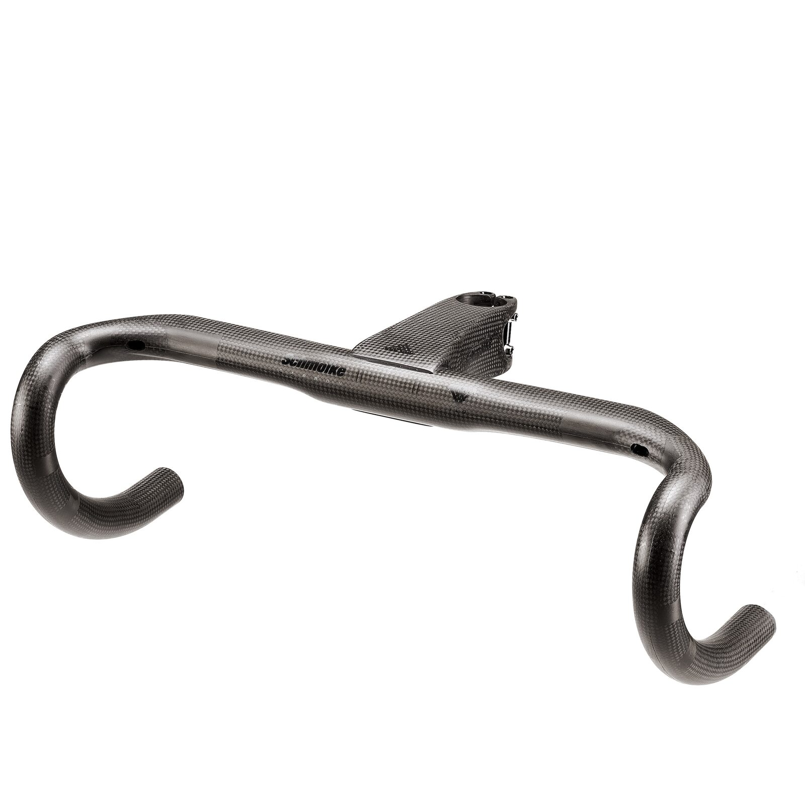

가운데 최대 17겹, 아래 곡선부 5겹. 힘이 몰리는 곳과 그렇지 않은 곳의 겹 수를 다르게 해 무게를 덜어 냈습니다.
알루미늄 너트를 반원형 판으로 받치는 대신, 카본 섬유가 인서트를 완전히 감싸 돕니다. 낮은 토크에서도 소리가 나지 않습니다.
콕핏은 케이블을 완전히 숨기고, 에보 TLO와 TLO 스템도 내장 케이블 구멍을 선택할 수 있습니다. 더해지는 무게는 약 4g입니다.
이렇게 가벼우면서도 쉬몰케의 핸들바와 스템, 콕핏은 최대 110kg까지 시험과 승인을 거쳤습니다.
쉬몰케의 기준이 되는 카본 드롭 핸들바. 1K 또는 UD 결, 세 가지 로고 에디션, 내장 케이블과 타임트라이얼 클립온 보강을 옵션으로 고릅니다.
에보 TLO와 같은 리치와 드롭에 스템을 하나로 합친 일체형 콕핏. 브레이크 레버 높이의 양쪽 구멍과 스템 가운데로 케이블이 지나갑니다.
드롭 앞쪽을 거의 수평으로 만들어 브레이크 레버와 손목이 일직선이 됩니다. 타임트라이얼 바는 달 수 없습니다.
Roadbar Cockpit TLO · Cockpit Aero TLO1K 결, 블랙 또는 화이트 로고


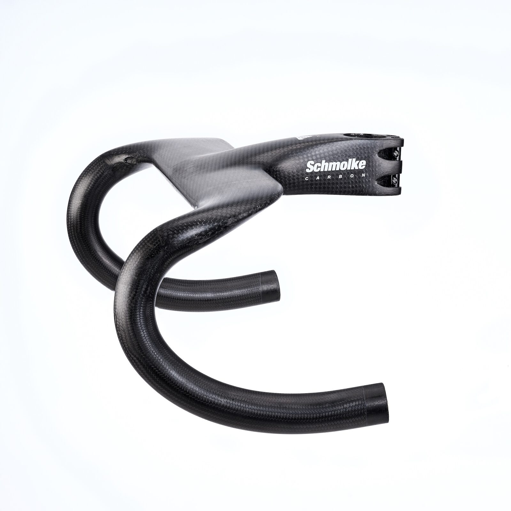

Roadbar Evo TLO · TLO Stem1K · UD, 쉬몰케 · 블랙 · 화이트 에디션


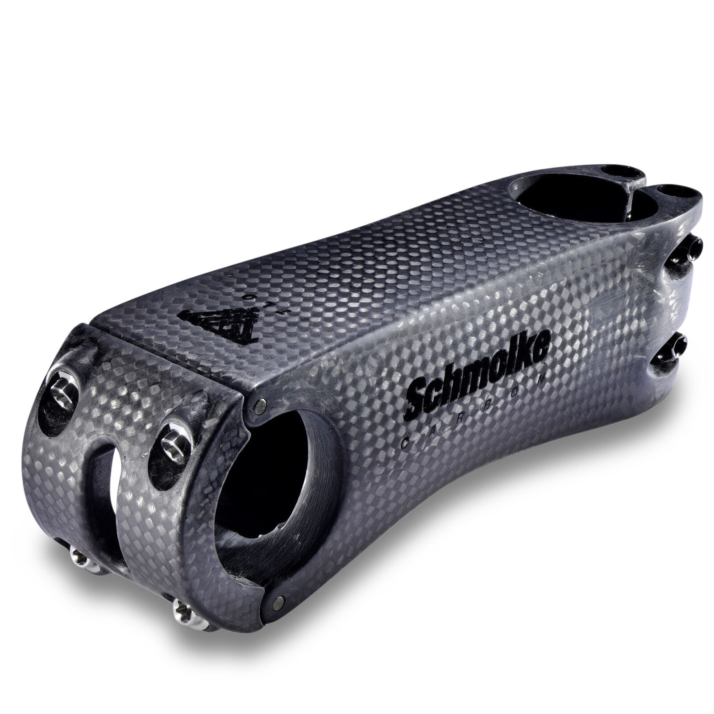
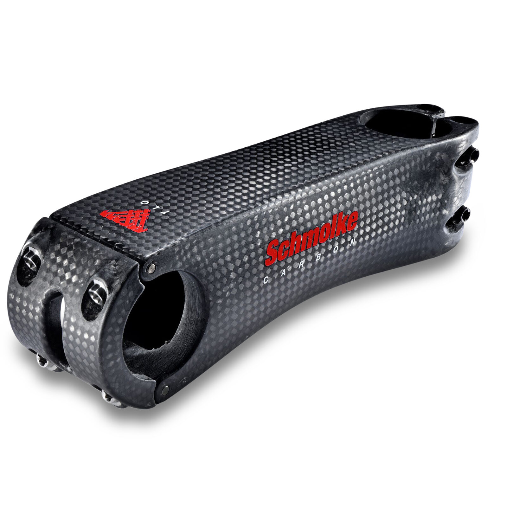
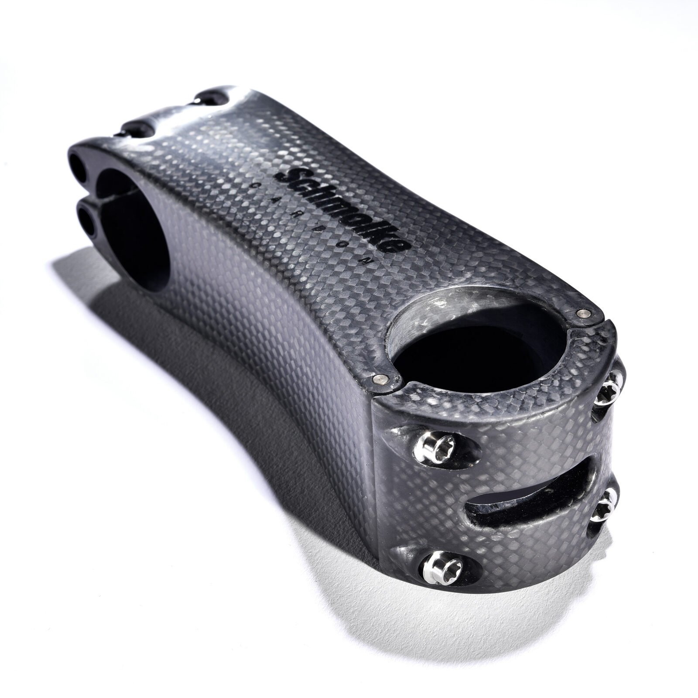
TLO Stem
TLO 스템은 80, 100, 110, 120mm 길이에 ±6° 각도, 31.8mm 핸들바 클램프와 1-1/8인치 스티어러를 씁니다. 100mm가 86g이고, 볼트는 M4 티타늄입니다. 도장하지 않은 1K 카본 그대로 마감합니다.
모든 길이에 내장 케이블 구멍이 있고, 80mm는 로드뿐 아니라 그래블과 MTB에도 승인을 받았습니다. 100~120mm는 로드 전용입니다. 스티어러를 잡는 높이는 40mm입니다.

Roadbar Cockpit Aero TLO
콕핏 에어로 TLO는 6° 플레어로 공기를 덜 받으면서도 지나치게 낮지 않은 자세를 만듭니다. 드롭 앞부분을 거의 수평으로 다듬어, 후드를 잡았을 때 손목이 브레이크 레버와 일직선이 됩니다.
스템 길이 100, 110, 120mm에 스택 40mm, 각도 -6°. 핸들바와 스템이 하나라 케이블을 핸들바 안으로 따로 꿰어 넣을 필요가 없습니다.
03
Seatpost
Seatpost TLO · SLUp to 23 layers
쉬몰케 시트포스트는 무게만큼 유연함으로 알려져 있습니다. 2012년 독일 RennRad 매거진의 컴포트 시트포스트 비교에서 TLO와 SL이 가장 큰 유연성으로 테스트 우승을 차지했고, 2022년 Roadbike 매거진의 카본 시트포스트 테스트에서도 1위에 올랐습니다.
하중이 큰 곳에는 최대 23겹, 적은 곳에는 7겹을 쌓아 앞뒤로는 부드럽게 휘고 좌우와 비틀림 강성은 지킵니다. 헤드는 안장 레일을 네 지점에서 잡고, 둥근 레일과 8 x 12mm까지의 오벌 카본 레일을 어댑터 없이 물립니다. 안쪽에는 Di2 배터리가 들어갑니다.
쉬몰케의 기준 시트포스트. 1K와 UD 결, 세 가지 로고 에디션에서 고릅니다. UD는 1K보다 몇 그램 무겁습니다.
10mm 셋백의 TLO. 같은 적층에 헤드만 뒤로 물려, 안장을 조금 더 뒤에 두고 싶은 라이더에게 맞습니다.
TLO와 같은 방식으로 손으로 감아 만든 SL 라인. 6mm 티타늄 볼트와 1K 결, 레드 · 화이트 로고로 마감합니다.
Seatpost TLO · TLO Setback · SL무도장 무광 에폭시
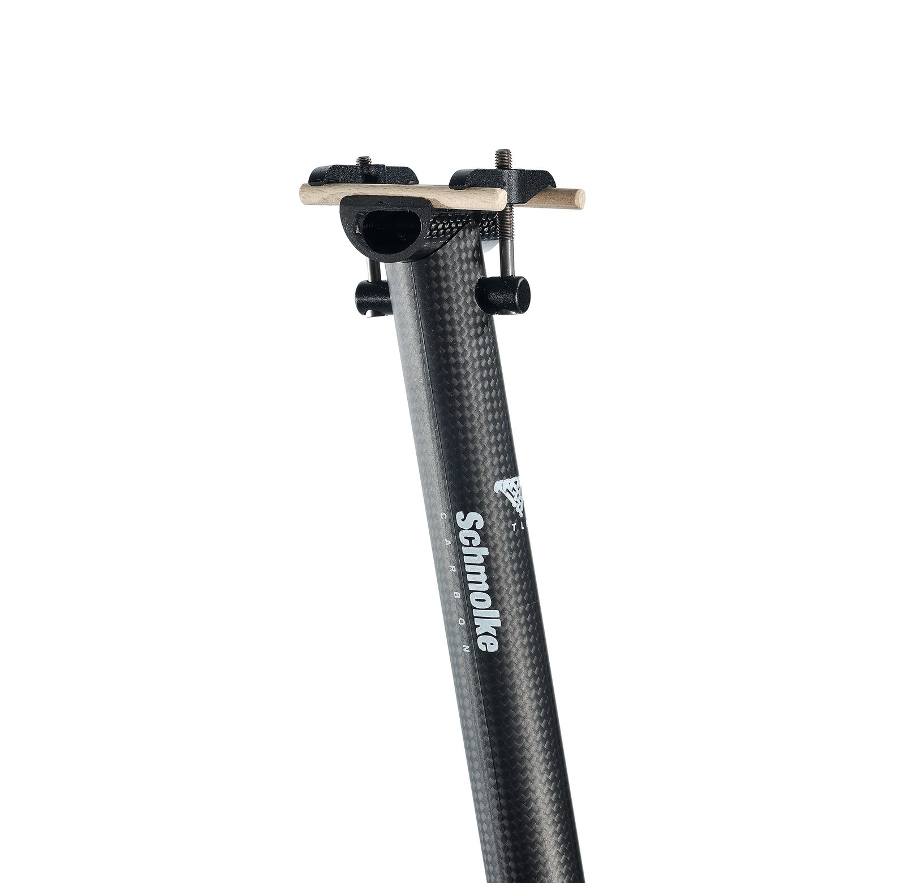
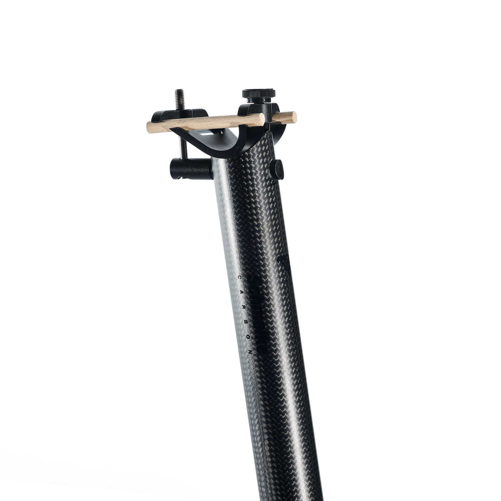
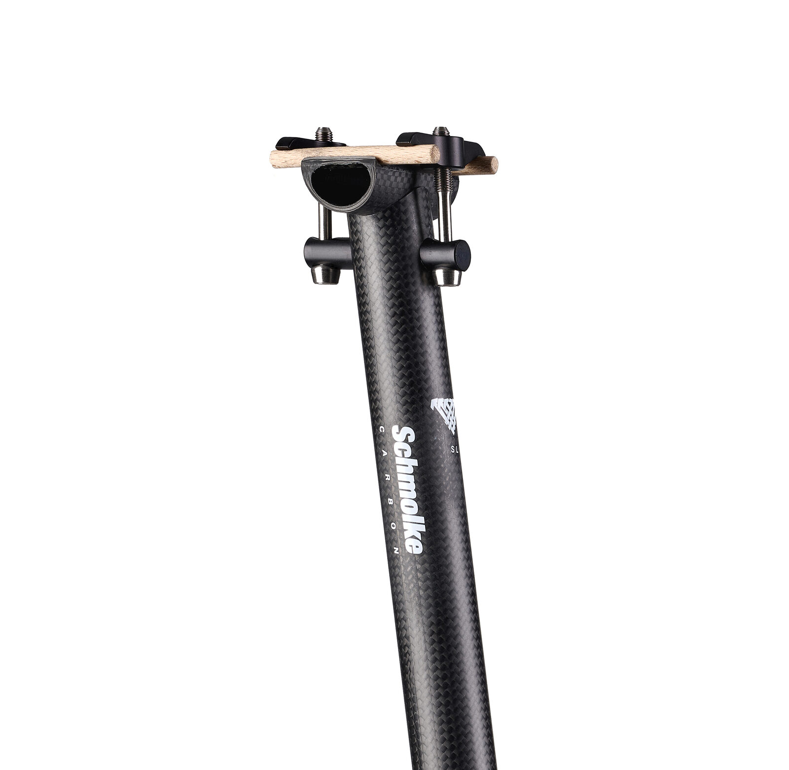
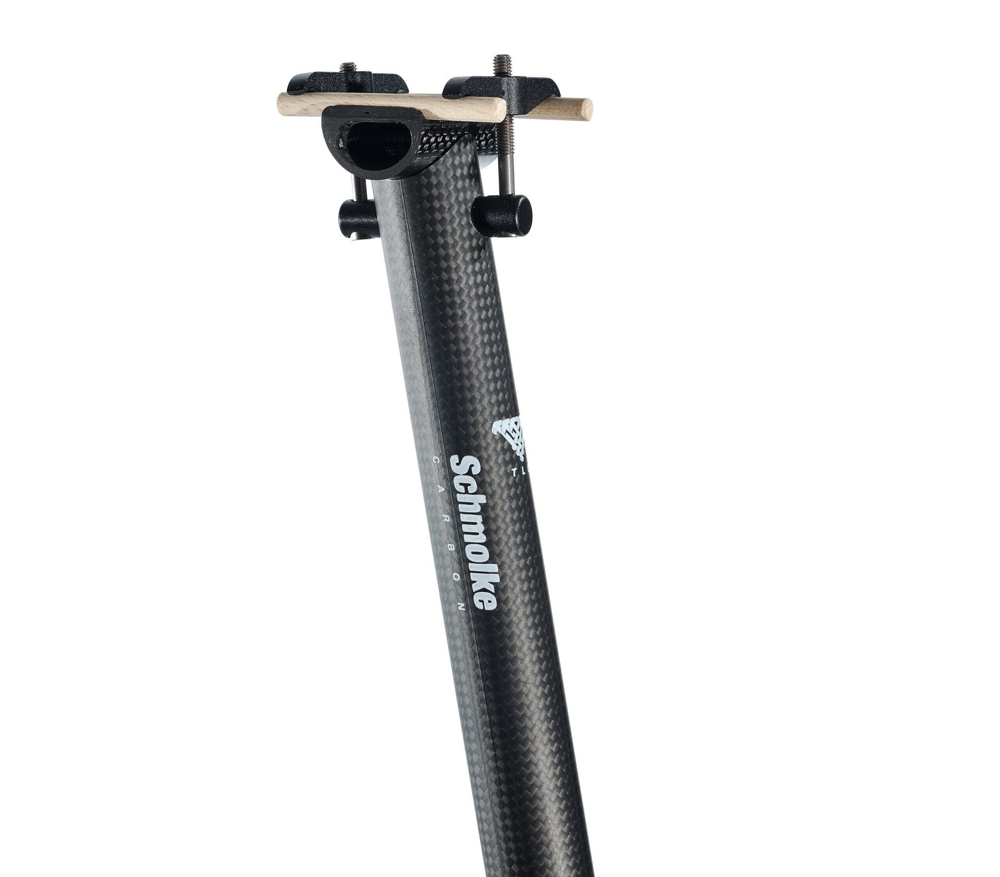
시트포스트는 프레임 위로 나오는 길이(프레임 끝에서 안장 레일 가운데까지)를 재서 길이를 고릅니다. 예를 들어 170mm가 나온다면 280mm 포스트가 맞습니다. 부위마다 벽 두께가 다르기 때문에 쉬몰케 시트포스트는 자르지 않고, 크게 사서 줄여 쓰지도 않습니다.
04
Saddle
TLO 55 · SL 79 · SL 99 · SL 109Full carbon, one piece
TLO 55는 쉘과 프레임, 레일까지 한 조각의 카본으로 만든 안장입니다. 무게는 이름 그대로 55g입니다. 쿠션 대신 카본 쉘이 휘면서 몸을 받칩니다. 독일 TOUR 매거진은 TLO 안장 테스트에서 쉘의 가운데와 양 날개가 눈에 띄게 휘어, 보기보다 편안하다고 평가했습니다.
SL 79는 폭 130mm로 로드와 그래블, 크로스컨트리까지 쓰는 3K 카본 안장입니다. SL 99와 SL 109는 카본 쉘에 가죽 또는 논레더 커버를 더해, 가벼움과 함께 약간의 쿠션을 원하는 라이더를 위한 모델입니다.
프레임과 레일이 하나로 이어진 풀카본 안장. 블랙 에디션, 팀 에디션, 레드 · 화이트 세 가지입니다.
조금 더 넓고 긴 3K 카본 안장. 장거리와 그래블에서도 TLO 시트포스트와 함께 가장 가벼운 조합을 만듭니다.
카본 쉘에 가죽(SL 99, SL 109) 또는 논레더(SL 109) 커버를 씌운 안장. 쉬몰케 안장 가운데 가장 부드럽습니다.
TLO 55 · SL 79 · SL 99블랙 · 팀 · 레드 화이트 에디션
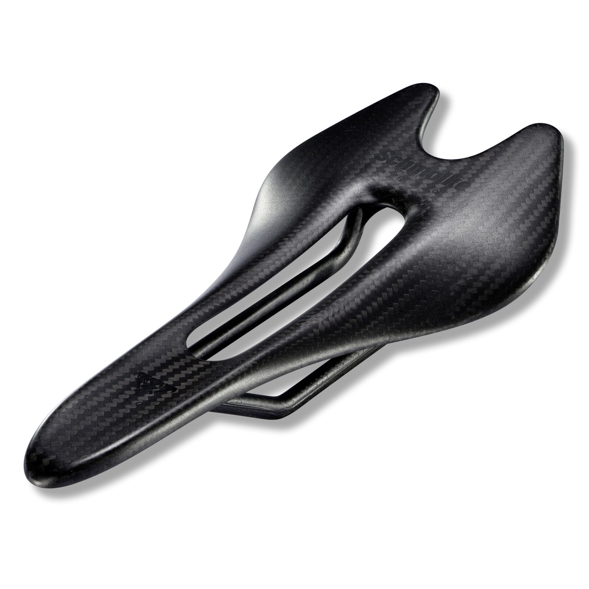

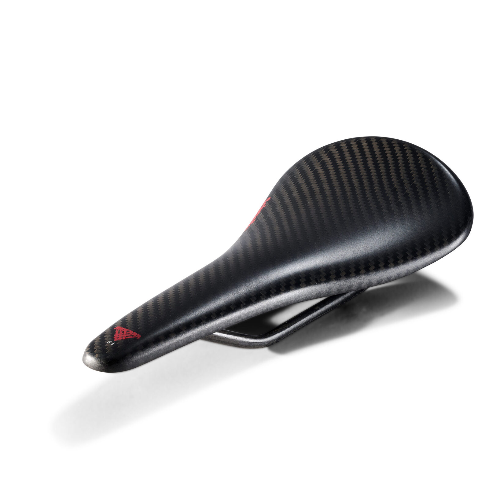

05
Wheels
TLO 37 · TLO 50 · TLO GravelCarbon rims, carbon spokes
쉬몰케 휠은 복잡한 일체 성형 대신 아주 가벼운 부품을 하나씩 손으로 엮는 전통 방식으로 만듭니다. 원형으로 짠 프리프레그를 얇게 손으로 쌓은 림에 티타늄 엔드 피스를 단 카본 스포크 24개, 익스트라라이트(Extralite)나 논플러스(NONPLUS) 허브를 조합합니다.
TLO 37 2세대는 한 쌍 840g으로 오르막을 위한 휠셋이고, Roadbike 매거진 테스트에서 1위에 올랐습니다. TLO 50은 50mm 림으로 940g을 기록해, BikeRadar가 지금까지 본 가장 가벼운 50mm 휠셋으로 꼽았습니다. 그래블에는 하나 2.2g의 텍스타일 스포크를 쓴 TLO 그래블 PI ROPE가 있습니다.
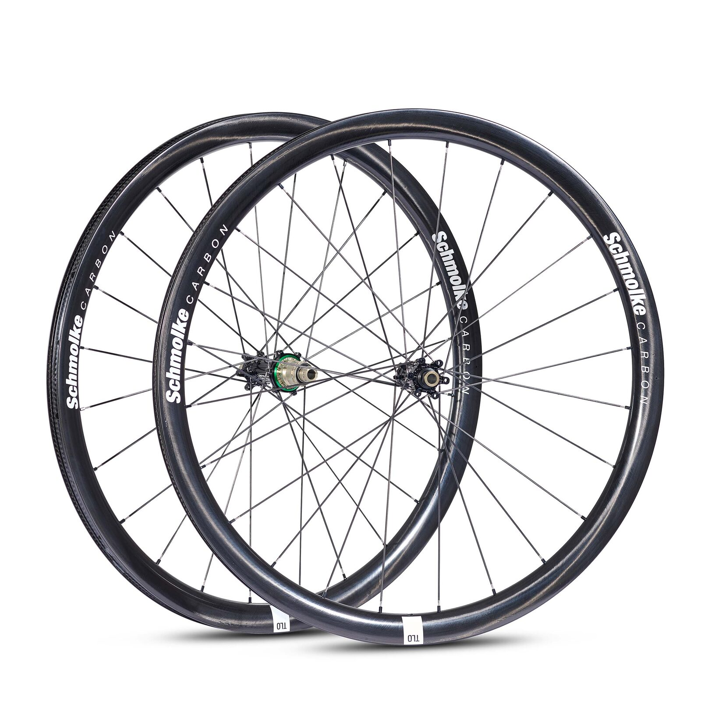

2세대 TLO 37. 안쪽 폭 25mm의 훅 비대칭 림으로 25~32mm 타이어에 맞고, 튜브리스로 씁니다. DT 스위스 180 허브로는 970g입니다.
T1100 카본 림과 카본 스포크의 50mm 휠셋. 28~40mm 타이어까지 쓰고, 스틸 에어로 스포크로도 고를 수 있습니다.
고강도 폴리에스터 PI ROPE 스포크로 엮은 그래블 휠셋. 40~45mm 타이어를 권장하며, 스포크 색은 11가지에서 고릅니다.
TLO 37 · TLO 50 · DetailsUD 카본, 블랙 또는 화이트 로고


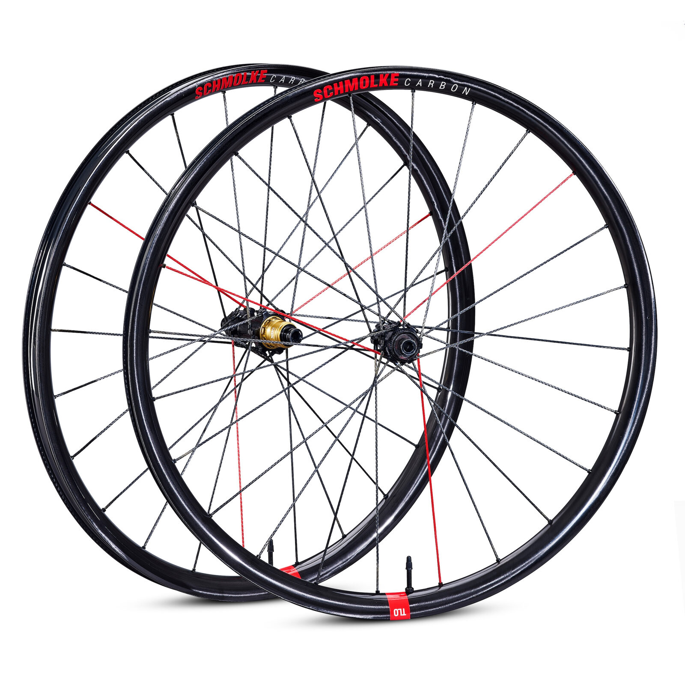
모든 휠셋은 디스크 브레이크, 앞 100mm · 뒤 142mm 12mm 스루액슬 규격이며, 프리허브는 시마노 HG, 스램 XDR, 캄파놀로 가운데 고릅니다. 주문 후 독일에서 손으로 조립하기 때문에 사양에 따라 납기가 다르니 루비워크샵에 미리 문의해 주세요.
06
Folding Bike
Lowriser · Seatpost · 16 inch RimFor Brompton T Line
쉬몰케는 폴딩 바이크를 위한 카본 부품도 만듭니다. 브롬톤 T 라인을 위한 TLO 로우라이저는 15mm 라이즈와 6° 스윕, 폭 560~600mm에 80~95g입니다. 바 끝을 양쪽 10mm까지 잘라 맞출 수 있습니다.
폴딩 바이크는 시트포스트가 길게 드러나는 만큼 무게 차이도 큽니다. 500~600mm 길이의 TLO 폴딩 시트포스트는 31.8 x 600mm 기준 159g으로, 일반 스틸 시트포스트보다 무게를 최대 절반까지 줄입니다. 16인치 TLO 카본 림은 185g입니다.

Minivelo · Folding
미니벨로와 폴딩 바이크는 바퀴가 작은 만큼 핸들바와 시트포스트의 비중이 큽니다. 쉬몰케의 로우라이저와 긴 카본 시트포스트는 접고 들어 올리는 일상의 무게를 눈에 띄게 줄입니다.
폴딩 바이크는 모델마다 시트포스트 지름과 슬리브 규격이 다르므로, 루비워크샵에서 자전거에 맞는 지름과 길이를 먼저 확인해 드립니다.
Folding Bike Parts1K · UD, 블랙 · 팀 에디션


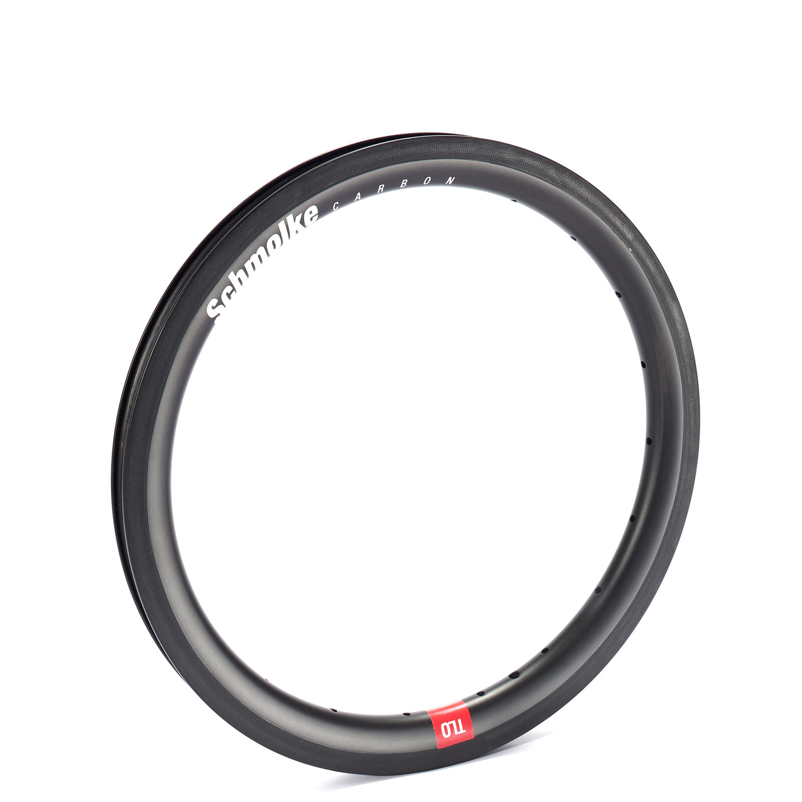
Small Parts물병 케이지, 카본 볼트, 바 플러그
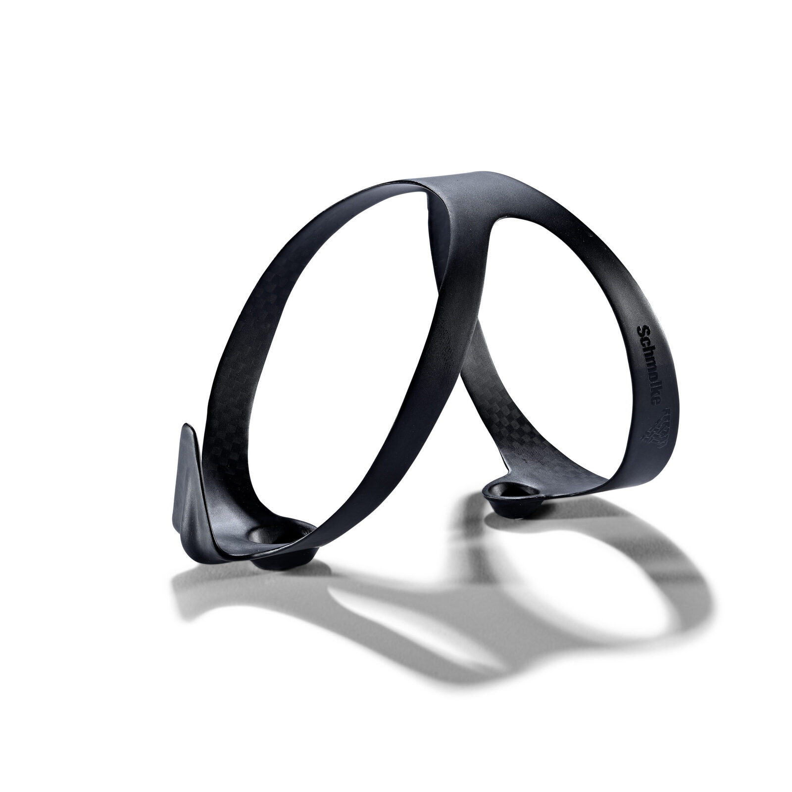


07
Fit Guide
핸들바는 폭과 리치, 드롭을, 시트포스트는 지름과 프레임 위로 나오는 길이를, 휠은 타이어 폭과 허용 총중량을 먼저 확인하세요. 수치는 쉬몰케 공식 사양 기준이며, 무게는 제조사 기준입니다.
Handlebars폭은 바깥에서 바깥 기준
| 모델 | 무게 | 폭 | 리치 | 드롭 | 플레어 | 스템 | 최대 하중 |
|---|---|---|---|---|---|---|---|
| Roadbar Evo TLO | 130 ~ 150g | 400 / 420 / 440mm | 73 / 78mm | 125 / 126mm | - | 별도 스템 | 110kg |
| Roadbar Cockpit TLO | 222g (420 x 100) | 400 / 420 / 440mm | 73 / 78mm | 125 / 126mm | 6° | 90 / 100 / 110mm, -6° | 110kg |
| Roadbar Cockpit Aero TLO | 250g (420 x 100) | 380 / 400 / 420mm | 77mm | 119mm | 6° | 100 / 110 / 120mm, -6° | 110kg |
Seatposts무게는 표시한 크기 기준
| 모델 | 무게 | 지름 | 길이 | 셋백 | 안장 레일 | 최대 체중 |
|---|---|---|---|---|---|---|
| Seatpost TLO | 95g (27.2 x 350) | 27.2 / 30.9 / 31.6 / 34.9mm | 로드 200 ~ 350mm, 그래블 · MTB 250 ~ 450mm | 0mm | 원형, 오벌 8 x 12mm까지 | 110kg |
| Seatpost TLO Setback | 110g (27.2 x 350) | 27.2 / 30.9 / 31.6 / 34.9mm | 로드 200 ~ 350mm, 그래블 · MTB 250 ~ 450mm | 10mm | 원형, 오벌 8 x 12mm까지 | 110kg |
| Seatpost SL | 105g (27.2 x 350) | 27.2 / 30.9 / 31.6 / 34.9mm | 로드 200 ~ 350mm, 그래블 · MTB 300 ~ 450mm | - | 원형, 오벌 8 x 12mm까지 | 110kg |
| Seatpost TLO 폴딩 바이크 | 159g (31.8 x 600) | 31.8 / 34.9mm | 500 / 550 / 600mm | - | 원형, 오벌 8 x 12mm까지 | 체중에 맞춰 제작 |
Wheelsets림 폭은 안 / 밖 기준
| 모델 | 무게 | 림 높이 | 림 폭 | 스포크 | 허브 | 최대 총중량 |
|---|---|---|---|---|---|---|
| TLO 37 TLR Disc 2nd Gen. | 840g | 37mm | 25 / 32.5mm | 카본 24개 | Extralite, NONPLUS (DT Swiss 180은 970g) | 100kg |
| TLO 50 TLR Disc | 940g | 50mm | 25 / 32.5mm | 카본 24개 | Extralite, NONPLUS (DT Swiss 180은 1,025g) | 115kg |
| TLO Gravel PI ROPE | 1,170g | 35mm | 25 / 31mm | PI ROPE 텍스타일 24개 | NONPLUS 센터락 | 110kg |
쉬몰케 부품은 라이더 체중과 사용 환경을 기준으로 설계됩니다. 허용 체중이나 총중량을 넘는 경우, 그리고 카본 부품을 조일 때는 반드시 토크 렌치와 카본 페이스트를 쓰는 매장에서 장착하시길 권합니다. 루비워크샵에서 프레임 규격과 체중을 확인하고 핸들바, 시트포스트, 안장, 휠 조합을 함께 맞춰 드립니다.
08
Story
1989 ~ 2026Konstanz, Germany
한 공학도의 졸업 논문에서 나온 카본 핸들바가 투르 드 프랑스 시상대에 오르고, 30여 년 뒤에는 5.4kg 완성차가 되었습니다. 쉬몰케는 새 시제품을 자주 발표하기보다, 만든 제품을 빠르게 내놓고 한 사람 한 사람의 주문에 정성을 들이는 방식을 지켜 왔습니다.
대학 졸업을 앞둔 슈테판 쉬몰케가 형과 하이엔드 자전거 매장을 열고, 새로운 소재와 카본 레이싱 핸들바의 이론을 졸업 논문으로 씁니다.
논문 이듬해, 실제로 탈 수 있는 첫 카본 로드 핸들바를 만듭니다.
핸들바 주문이 생산 능력을 넘어서자 콘스탄츠에서 쉬몰케 카본을 세웁니다.
얀 울리히가 쉬몰케 핸들바로 투르 드 프랑스 종합 2위에 오릅니다. 품질 시험에서 카본 바는 알루미늄보다 단단하고 가벼웠습니다.
RennRad 매거진의 컴포트 시트포스트 비교 테스트에서 TLO와 SL이 가장 큰 유연성과 가벼운 무게로 우승합니다.
같은 독일의 카본 컴포넌트 회사 THM과 함께하기 시작합니다. 두 회사는 각자의 공장과 팀을 독립적으로 운영합니다.
30주년을 맞아 카본 프레임과 완성차를 선보입니다. 에어로우(Aerrow)와 그래블 바이크 인피니티(Infinity)가 여기서 시작됩니다.
완성차 5.4kg의 레게리시마 TLO가 독일 TOUR 매거진 테스트에서 가장 가벼운 로드바이크로 기록됩니다.
핸들바와 스템을 하나로 합친 로드바 콕핏 TLO와 콕핏 에어로 TLO를 선보입니다.

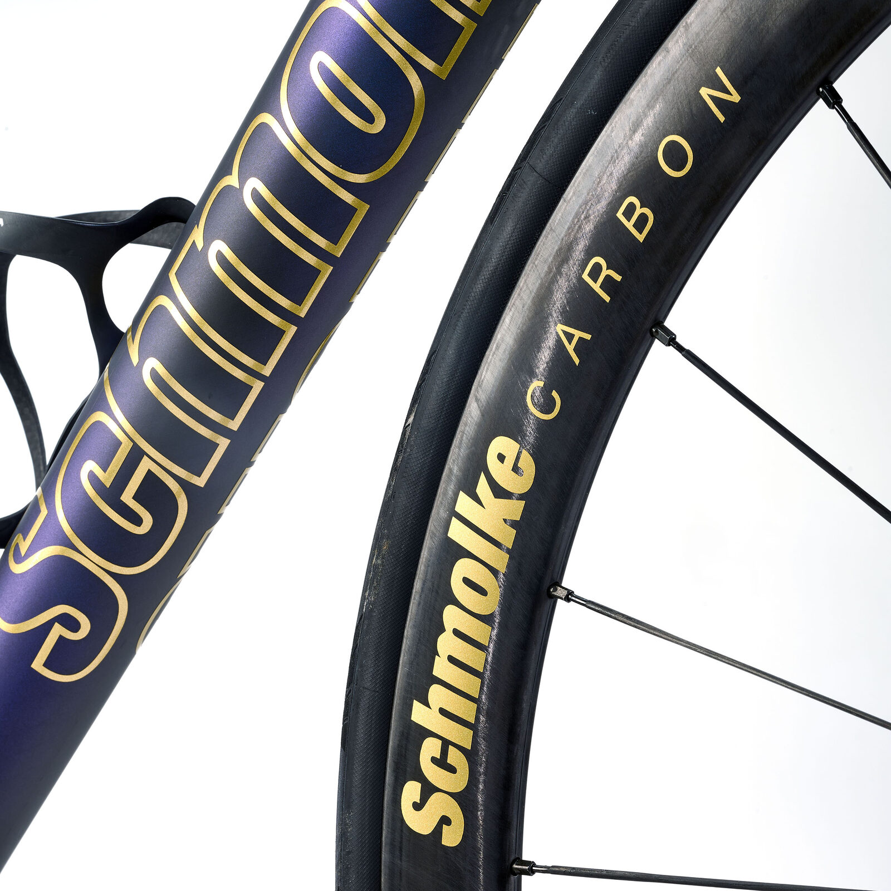
Glossary


09 · Showroom
카본 부품의 무게는 손에 들어 봐야 실감합니다. 루비워크샵에서 쉬몰케 부품을 직접 보고, 프레임 규격과 체중, 라이딩 스타일에 맞는 구성을 함께 정해 드립니다. 많은 제품이 주문 후 독일에서 만들어지므로 사이즈와 마감, 납기를 미리 상담해 주세요. 커스텀 빌드 상담도 가능합니다.
For Dealers
쉬몰케의 한국 공식 디스트리뷰터는 루비컴퍼니입니다. 매장 입점과 거래 조건은 루비컴퍼니의 B2B 채널 루비서플라이로 문의해 주세요.